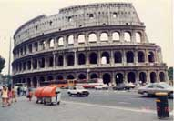

 ローマ市内を観光して、行くときはぶらぶらしてカラカラ浴場に辿り着いた。見学をして市内に帰る時は地下鉄に乗る ことにした。カラカラ浴場で知り合った女性二人と一緒に地下鉄駅に向かう。駅の自動販売機で私ともう一人は切符を買 えた、残りの一人は自動販売機が故障して買えなくなった。自動販売機は１台しかないし、近くに駅員もいない。ちょっ と困ったがどうしようもないので、そのまま電車のホームに向かう。改札口はあったが壊れていたので、そのまま３人通 過し、難なく電車に乗りテルミニ駅に到着する。そしてそのまま外に出られた、やはり改札口がなかった。一人無賃乗車 してしまっている。数日後ピサの斜塔で有名な所に電車で行った。この時はちゃんと往復ともに電車代を払っている。駅からピサの斜塔ま でバスで行くことになる。案内書には近くの売店で乗車券を購入するように書いてあるが、どこで買い求めるのか分から ないし、英語が通じにくいのでお手上げである。えーい、乗って何とかなると思った、いざ乗ると運転手は何も言わない し他のお客もそのまま乗っている。私は分からないのでそのまま乗っていた。なんとなく他の乗客の視線を感じるがどう しようもない。結局無賃乗車になってしまう。帰りは、何とかチケットを売っている店を見つけて購入する。再度バスに 乗り、他の乗客をよく観察すると自分で購入したチケットに何か印をつけて支払済みの処置をしていたので、真似をして印 をつけた。 感覚的には客が自己申告して乗車賃を支払うシステムで、無賃乗車するやからはいないという性善説で成り立っている のかなと思う出来事でした。 旅行前にきちんと調べていない私が悪いのでしょう。何しろ行こうと決めてから、人集めに奔走し誰も集まらず、そして １週間後に出発という慌しさで事前に詳細チェックなど余裕がなかった。誰も集まらなかったので止めようかと思ったが、 それもみっともなく感じて一人で行くことにした。 一人で旅行して、海外旅行一人旅に自信がついた。渡る世間には鬼はなしです、何処の人も皆やさしいと感じる旅でした。 でもローマで子供のすりにあいました、これは後日談としましょう。 ２００１年１０月２８日 記
|